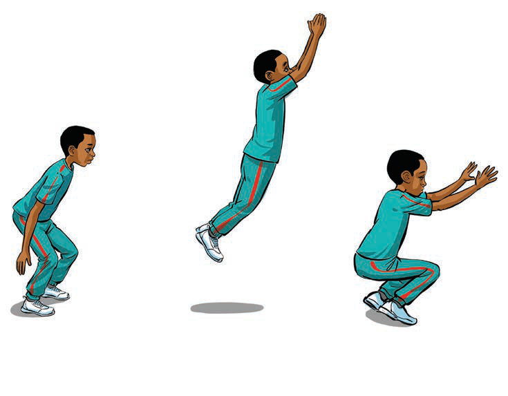

(d) Rope skipping
This is an exercise that helps to improve leg speed and increase stamina. This exercise can be done by rope skipping on one leg or both legs.
How to do rope skipping
- Hold the rope ends with your hands;
- Swing it moving down your feet and above your head as you jump;
- Keep jumping at a faster pace for 60 seconds, then rest for 30 seconds; and
- Repeat 3 to 5 times, by following steps (i-iii) as shown in Figure 8.